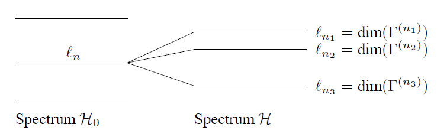

\({\cal{G}}\) is a group for the operation \(\bullet\) if:
If also holds that if:
5. \(\forall_{A,B\in{\cal{G}}}\Rightarrow A\bullet B=B\bullet A\) the group is called Abelian or commutative.
Each element arises only once in each row and column of the Cayley- or multiplication table: because \(EA_i=A_k^{-1}(A_kA_i)=A_i\) each \(A_i\) appears once. There are \(h\) positions in each row and column when there are \(h\) elements in the group so each element appears only once.
\(B\) is conjugate to \(A\) if \(\exists_{X\in{\cal{G}}}\) such that \(B=XAX^{-1}\). Then \(A\) is also conjugate to \(B\) because \(B=(X^{-1})A(X^{-1})^{-1}\).
If \(B\) and \(C\) are conjugate to \(A\), \(B\) is also conjugate with \(C\).
A subgroup is a subset of \({\cal{G}}\) which is also a group w.r.t. the same operation.
A conjugacy class is the maximum collection of conjugated elements. Each group can be split up in conjugacy classes. Some theorems:
The physical interpretation of classes: elements of a group are usually symmetry operations which map a symmetrical object into itself. Elements of one class are then the same kind of operations. The opposite need not to be true.
Two groups are isomorphic if they have the same multiplication table. The mapping from group \({\cal{G}}_1\) to \({\cal{G}}_2\), so that the multiplication table remains the same is a homomorphic mapping. It need not be isomorphic.
A representation is a homomorphic mapping of a group to a group of square matrices with the usual matrix multiplication as the combining operation. This is symbolized by \(\Gamma\). The following holds: \[\Gamma(E)=I\hspace{-0.8ex}I~~,~~\Gamma(AB)=\Gamma(A)\Gamma(B)~~,~~ \Gamma(A^{-1})=[\Gamma(A)]^{-1}\] For each group there are 3 possibilities for a representation:
An equivalent representation is obtained by performing an unitary base transformation: \(\Gamma'(A)=S^{-1}\Gamma(A)S\).
If the same unitary transformation can bring all matrices of a representation \(\Gamma\) in the same block structure the representation is called reducible:
\[\Gamma(A)=\left(\begin{array}{cc} \Gamma^{(1)}(A)&0\\ 0&\Gamma^{(2)}(A) \end{array}\right)\]
This is written as: \(\Gamma=\Gamma^{(1)}\oplus\Gamma^{(2)}\). If this is not possible the representation is called irreducible.
The number of irreducible representations equals the number of conjugate classes.
: Each matrix which commutes with all matrices of an irreducible representation is a constant \(\times I\hspace{-0.8ex}I\), where \(I\hspace{-0.8ex}I\) is the unit matrix. The opposite is (of course) also true.
: If there exists a matrix \(M\) so that for two irreducible representations of group \({\cal{G}}\), \(\gamma^{(1)}(A_i)\) and \(\gamma^{(2)}(A_i)\), then: \(M\gamma^{(1)}(A_i)=\gamma^{(2)}(A_i)M\), than the representations are equivalent, or \(M=\underline{\underline{0}}\).
For a set of unequivalent, irreducible, for unitary representations if \(h\) is the number of elements in the group and \(\ell_i\) is the dimension of the \(i^{\rm th}\) representation:
\[\displaystyle \sum_{R\in{\cal{G}}}\Gamma^{(i)*}_{\mu\nu}(R)\Gamma^{(j)}_{\alpha\beta}(R)= \frac{h}{\ell_i}\delta_{ij}\delta_{\mu\alpha}\delta_{\nu\beta}\]
The character of a representation is given by the trace of the matrix and is therefore invariant for base transformations: \(\chi^{(j)}(R) = \mbox{Tr}(\Gamma^{j}(R))\)
This also holds for \(N_k\) the number of elements in a conjugate class: \( \sum_{k} \chi^{(i)*}(C_{k})\chi^{(j)}(C_{k})N_{k}=h\delta _{ij}\)
Theorem: \(\displaystyle \sum_{i=1}^{n} \ell_i^{2} =h \)Consider a set of symmetry transformations \(\vec{x}\,'=R\vec{x}\) which leave the Hamiltonian \({\cal{H}}\) invariant. These transformations are a group. An isomorphic operation on the wavefunction is given by: \(P_R\psi(\vec{x}\,)=\psi(R^{-1}\vec{x}\,)\). This is considered an active rotation. These operators commute with \( {\cal H}\;:\; P_R {\cal H}={\cal H}P_R \), and leave the volume element unchanged: \(d(R\vec{x})\ =d\vec{x}\).
\(P_R\) is the symmetry group of the physical system. It causes degeneracy: if \(\psi_n\) is a solution of \( \cal{H}\psi _n=E_n \psi _n\)then also : \(\cal{H}(P_R\psi_n)=E_n(P_R\psi_n)\). A degeneracy which is not the result of a symmetry is called an accidental degeneracy.
Assume an \(\ell_n\)-fold degeneracy at \(E_n\): then choose an orthonormal set \(\psi^{(n)}_{\nu}\), \(\nu=1,2,\ldots,\ell_n\). The function \(P_R\psi^{(n)}_{\nu}\) is in the same subspace: \(\displaystyle P_R\psi^{(n)}_{\nu}=\sum_{\kappa=1}^{\ell_n}\psi^{(n)}_{\kappa} \Gamma^{(n)}_{\kappa\nu}(R)\)
where \(\Gamma^{(n)}\) is an irreducible, unitary representation of the symmetry group \({\cal{G}}\) of the system. Each \(n\) corresponds with another energy level. One can mathematically derive the irreducible representations of a symmetry group and label the energy levels with a quantum number this way. A fixed choice of \(\Gamma^{(n)}(R)\) defines the base functions \(\psi^{(n)}_{\nu}\). This way one can also label each separate base function with a quantum number.
the symmetry operation is a cyclic group: note the operator describing one translation over one unit as \(A\). Then: \({\cal{G}}=\{A,A^2,A^3,\ldots,A^h=E\}\).
The group is Abelian so all irreducible representations are one-dimensional. For \(0\leq p\leq h-1\) follows:
\[\Gamma^{(p)}(A^n)={\rm e}^{2\pi ipn/h}\]
If one defines: \(\displaystyle k=-\frac{2\pi p}{ah} \left({\rm mod}\frac{2\pi}{a}\right)\), then: \(\displaystyle P_A\psi_p(x)=\psi_p(x-a)={\rm e}^{2\pi ip/h}\psi_p(x)\), this gives Bloch’s theorem: \(\displaystyle\psi_k(x)=u_k(x){\rm e}^{ikx}\), with \(u_k(x\pm a)=u_k(x)\).
Suppose the unperturbed system has Hamiltonian \(\cal{H}_0\) and symmetry group \( \cal{G}_0\). The perturbed system has \(\cal{H} =\cal{H}_0+\cal V\), and symmetry group \(\cal{G} \subset{\cal{G}}_0\). If \(\Gamma^{(n)}(R)\) is an irreducible representation of \(\cal{G}_0\), it is also a representation of \( \cal{G}\) but not all elements of \(\Gamma^{(n)}\) in \(\cal{G}_0\) are also in \(\cal{G}\). The representation then usually becomes reducible: \(\Gamma^{(n)}=\Gamma^{(n_1)}\oplus\Gamma^{(n_2)}\oplus\ldots\). The degeneracy is then (possibly partially) removed: see the figure below.

The set of \(\ell_n\) degenerate eigenfunctions \(\psi^{(n)}_{\nu}\) with energy \(E_n\) is a basis set for an \(\ell_n\)-dimensional irreducible representation \(\Gamma^{(n)}\) of the symmetry group.
Each function \(F\) in configuration space can be decomposed into symmetry types: \(\displaystyle F=\sum_{j=1}^{n}\sum_{\kappa=1}^{\ell_j}f_{\kappa}^{(j)}\)
The following operator extracts the symmetry types:
\[\left(\frac{\ell_j}{h}\sum_{R\in{\cal{G}}}\Gamma^{(j)*}_{\kappa\kappa}(R)P_R\right)F=f^{(j)}_{\kappa}\]
This is expressed as: \(f_{\kappa}^{(j)}\) being the part of \(F\) that transforms according to the \(\kappa^{\b{\rm th}}\) row of \(\Gamma^{(j)}\).
\(F\) can also be expressed in basis functions \(\varphi\): \(F=\sum\limits_{aj\kappa}c_{aj\kappa}\varphi_{\kappa}^{(aj)}\). The functions \(f_{\kappa}^{(j)}\) are in general not transformed into each other by elements of the group. However, this happen if \(c_{ja\kappa}=c_{ja}\).
Two wavefunctions transforming according to non-equivalent unitary representations or according to different rows of an unitary irreducible representation are orthogonal:
\(\langle\varphi^{(i)}_{\kappa}|\psi^{(j)}_{\lambda}\rangle\sim\delta_{ij}\delta_{\kappa\lambda}\), and \(\langle\varphi^{(i)}_{\kappa}|\psi^{(i)}_{\kappa}\rangle\) is independent of \(\kappa\).
Consider a physical system existing of two subsystems. The subspace \(D^{(i)}\) of the system transforms according to \(\Gamma^{(i)}\). The basis functions are \(\varphi^{(i)}_{\kappa}(\vec{x}_i)\), \(1\leq\kappa\leq\ell_i\). Now form all \(\ell_1\times\ell_2\) products \(\varphi^{(1)}_{\kappa}(\vec{x}_1)\varphi^{(2)}_{\lambda}(\vec{x}_2)\). These define a space \(D^{(1)}\otimes D^{(2)}\).
These products functions transform as:
\[P_R(\varphi^{(1)}_{\kappa}(\vec{x}_1)\varphi^{(2)}_{\lambda}(\vec{x}_2))=(P_R\varphi^{(1)}_{\kappa}(\vec{x}_1))(P_R\varphi^{(2)}_{\lambda}(\vec{x}_2))\]
In general the space \(D^{(1)}\otimes D^{(2)}\) can be split up in a number of invariant subspaces:
\[\Gamma^{(1)}\otimes\Gamma^{(2)}=\sum_i n_i\Gamma^{(i)}\]
A useful tool for this reduction is that for the characters: \[\chi^{(1)}(R)\chi^{(2)}(R)=\sum_i n_i\chi^{(i)}(R)\]
With the reduction of the direct-product matrix w.r.t. the basis \(\varphi_{\kappa}^{(i)}\varphi_{\lambda}^{(j)}\) one uses a new basis \(\varphi_{\mu}^{(a\kappa)}\). These basis functions lie in subspaces \(D^{(ak)}\). The unitary base transformation is given by:
\[\varphi_{\mu}^{(ak)}=\sum_{\kappa\lambda}\varphi^{(i)}_{\kappa}\varphi^{(j)}_{\lambda}(i\kappa j\lambda|ak\mu)\]
and the inverse transformation by: \(\displaystyle\varphi^{(i)}_{\kappa}\varphi^{(j)}_{\lambda}=\sum_{ak\mu}\varphi_{\mu}^{(a\kappa)}(ak\mu|i\kappa j\lambda)\)
In essence the Clebsch-Gordan coefficients are dot products: \((i\kappa j\lambda|ak\mu):=\langle\varphi_k^{(i)}\varphi_{\lambda}^{(j)}|\varphi_{\mu}^{(ak)}\rangle\)
Observables (operators) transform as follows under symmetry transformations: \(A'=P_RAP_R^{-1}\). If a set of operators \(A^{(j)}_{\kappa}\) with \(0\leq\kappa\leq\ell_j\) transform into each other under the transformations of \({\cal{G}}\): \
[P_RA_{\kappa}^{(j)}P_R^{-1}=\sum_{\nu}A_{\nu}^{(j)}\Gamma^{(j)}_{\nu\kappa}(R)\]
If \(\Gamma^{(j)}\) is irreducible they are called irreducible tensor operators \(A^{(j)}\) with components \(A^{(j)}_{\kappa}\).
An operator can also be decomposed into symmetry types: \(A=\sum\limits_{jk}a^{(j)}_k\), with:
\[a^{(j)}_{\kappa}=\left(\frac{\ell_j}{h}\sum_{R\in{\cal{G}}}\Gamma^{(j)*}_{\kappa\kappa}(R)\right)(P_RAP_R^{-1})\]
Theorem: Matrix elements \(H_{ij}\) of the operator \({\cal{H}}\) which is invariant under \(\forall_{A\in{\cal{G}}}\), are 0 between states which transform according to non-equivalent irreducible unitary representations or according to different rows of such a representation. Further \(\langle\varphi^{(i)}_{\kappa}|{\cal{H}}|\psi^{(i)}_{\kappa}\rangle\) is independent of \(\kappa\). For \({\cal{H}}=1\) this becomes the previous theorem.
This is applied in quantum mechanics in perturbation theory and variational calculus. Here one tries to diagonalize \({\cal{H}}\). Solutions can be found within each category of functions \(\varphi^{(i)}_{\kappa}\) with common \(i\) and \(\kappa\): \({\cal{H}}\) is already diagonal in categories as a whole.
Perturbation calculations can be applied independently within each category. With the variational calculus functions can be chosen within a separate category because the exact eigenfunctions transform according to a row of an irreducible representation.
The matrix element \(\langle\varphi^{(i)}_{\lambda}|A^{(j)}_{\kappa}|\psi^{(k)}_{\mu}\rangle\) can only be \(\neq0\) if \(\Gamma^{(j)}\otimes\Gamma^{(k)}=\ldots\oplus\Gamma^{(i)}\oplus\ldots\). This is the case if \(\Gamma^{(i)}\) appears only once, otherwise one has to sum over \(a\)):
\[ \langle\varphi^{(i)}_{\lambda}|A^{(j)}_{\kappa}|\psi^{(k)}_{\mu}\rangle= (i\lambda|j\kappa k\mu)\langle\varphi^{(i)}\|A^{(j)}\|\psi^{(k)}\rangle \]
This theorem can be used to determine selection rules: the probability of a dipole transition is given by (\(\vec{\epsilon}\) is the direction of polarization of the radiation):
\[P_D=\frac{8\pi^2e^2f^3|r_{12}|^2}{3\hbar\varepsilon_0c^3} ~~\mbox{with}~~r_{12}=\langle l_2m_2|\vec{\epsilon}\cdot\vec{r}\,|l_1m_1\rangle\]
Further it can be used to determine intensity ratios: if there is only one value of \(a\) the ratio of the matrix elements are the Clebsch-Gordan coefficients. For more \(a\)-values relations between the intensity ratios can be stated. However, the intensity ratios are also dependent on the occupation of the atomic energy levels.
Continuous groups have \(h=\infty\). However, not all groups with \(h=\infty\) are continuous, e.g. the translation group of an spatially infinite periodic potential is not continuous but does have \(h=\infty\).
For the translation of wavefunctions over a distance \(a\) \(P_a\psi(x)=\psi(x-a)\). A Taylor expansion near \(x\) gives:
\[\psi(x-a)=\psi(x)-a\frac{d\psi(x)}{dx}+\frac{1}{2}a^2\frac{d^2\psi(x)}{dx^2}-+\ldots\]
Because the momentum operator in quantum mechanics is given by: \(\displaystyle p_x=\frac{\hbar}{i}\frac{\partial}{\partial x}\), this can be written as:
\[\psi(x-a)={\rm e}^{-iap_x/\hbar}\psi(x)\]
This group is called SO(3) because a faithful representation can be constructed from orthogonal \(3\times3\) matrices with a determinant of +1.
For an infinitesimal rotation around the \(x\)-axis :
\[\begin{aligned} P_{\delta\theta_x}\psi(x,y,z)&\approx&\psi(x,y+z\delta\theta_x,z-y\delta\theta_x)\\ &=&\psi(x,y,z)+\left(z\delta\theta_x\frac{\partial}{\partial y}-y\delta\theta_x\frac{\partial}{\partial z}\right)\psi(x,y,z)\\ &=&\left(1-\frac{i\delta\theta_xL_x}{\hbar}\right)\psi(x,y,z)\end{aligned}\]
Because the angular momentum operator is given by: \(\displaystyle L_x=\frac{\hbar}{i} \left(z\frac{\partial}{\partial y}-y\frac{\partial}{\partial z}\right)\).
So in an arbitrary direction \( \begin{matrix}P_{\alpha,\vec{n}}=\exp(-i\alpha(\vec{n}\cdot\vec{J}\hspace{0.5mm})/\hbar)
\\
P_{a,\vec{n}}=\exp(-ia(\vec{n}\cdot\vec{p}\hspace{0.5mm})/\hbar)
\end{matrix} \)
\(J_x\), \(J_y\) and \(J_z\) are called the generators of the 3-dim. rotation group, \(p_x\), \(p_y\) and \(p_z\) are called the generators of the 3-dim. translation group.
The commutation rules for the generators can be derived from the properties of the group for multiplications: translations are interchangeable \(\leftrightarrow p_xp_y-p_yp_x=0\).
Rotations are not generally interchangeable: consider a rotation around axis \(\vec{n}\) in the \(xz\)-plane over an angle \(\alpha\). Then: \(P_{\alpha,\vec{n}}=P_{-\theta,y}P_{\alpha,x}P_{\theta,y}\), so:
\[{\rm e}^{-i\alpha(\vec{n}\cdot\vec{J}\hspace{0.5mm})/\hbar}= {\rm e}^{i\theta J_y/\hbar}{\rm e}^{-i\alpha J_x/\hbar}{\rm e}^{-i\theta J_y/\hbar}\]
If \(\alpha\) and \(\theta\) are very small and are expanded to second order, and the corresponding terms are put equal with \(\vec{n}\cdot\vec{J}=J_x\cos\theta+J_z\sin\theta\), it follows from the \(\alpha\theta\) term: \(J_xJ_y-J_yJ_x=i\hbar J_z\).
The elements \(R(p_1,...,p_n)\) depend continuously on parameters \(p_1,...,p_n\). For the translation group this are e.g. \(an_x\), \(an_y\) and \(an_z\). It is demanded that the multiplication and inverse of an element \(R\) depend continuously on the parameters of \(R\).
The statement that each element arises only once in each row and column of the Cayley table holds also for continuous groups. The notion conjugacy class for continuous groups is defined equally as for discrete groups. The notion representation is fitted by demanding continuity: each matrix element depends continuously on \(p_i(R)\).
Summation over all group elements is for continuous groups replaced by an integration. If \(f(R)\) is a function defined on \({\cal{G}}\), e.g. \(\Gamma_{\alpha\beta}(R)\), then:
\[\int\limits_{\cal{G}}f(R)dR:=\int\limits_{p_1}\cdots\int\limits_{p_n} f(R(p_1,...,p_n))g(R(p_1,...,p_n))dp_1\cdots dp_n \]
Here, \(g(R)\) is the density function.
Because of the properties of the Cayley table : \(\int f(R)dR=\int f(SR)dR\). This fixes \(g(R)\) except for a constant factor. Define new variables \(p'\) by: \(SR(p_i)=R(p'_i)\). If one writes: \(dV:=dp_1\cdots dp_n\) then:
\[g(S)=g(E)\frac{dV}{dV'}\]
Here, \(\displaystyle\frac{dV}{dV'}\) is the Jacobian: \(\displaystyle\frac{dV}{dV'}=\mbox{det}\left(\frac{\partial p_i}{\partial p'_j}\right)\), and \(g(E)\) is constant.
For the translation groups: \(g(\vec{a})=\mbox{constant}=g(\vec{0}\,)\) because \(g(a\vec{n}\,)d\vec{a}'=g(\vec{0}\,)d\vec{a}\) and \(d\vec{a}'=d\vec{a}\).
This leads to the Grand Orthogonality Theorem:
\[\int\limits_{\cal{G}}\Gamma^{(i)*}_{\mu\nu}(R)\Gamma^{(j)}_{\alpha\beta}(R)dR= \frac{1}{\ell_i}\delta_{ij}\delta_{\mu\alpha}\delta_{\nu\beta}\int\limits_{\cal{G}}dR\]
and for the characters:
\[\int\limits_{\cal{G}}\chi^{(i)*}(R)\chi^{(j)}(R)dR=\delta_{ij}\int\limits_{\cal{G}}dR\]
Compact groups are groups with a finite group volume: \(\int_{\cal{G}}dR<\infty\).
One can take 2 parameters for the direction of the rotational axis and one for the angle of rotation \(\varphi\). The parameter space is a collection points \(\varphi\vec{n}\) within a sphere with radius \(\pi\). The diametrical points on this sphere are equivalent because \(R_{\vec{n},\pi}=R_{\vec{n},-\pi}\).
Another way to define parameters is by means of Eulers angles. If \(\alpha\), \(\beta\) and \(\gamma\) are the 3 Euler angles, defined as:
then the rotation of a quantum mechanical system is described by:
\(\psi\rightarrow {\rm e}^{-i\alpha J_z\hbar}{\rm e}^{-i\beta J_y/\hbar}{\rm e}^{-i\gamma J_z/\hbar}\psi\). So \(\displaystyle P_R={\rm e}^{-i\varepsilon(\vec{n}\cdot\vec{J}\hspace{0.5mm})/\hbar}\).
All irreducible representations of SO(3) can be constructed from the behaviour of the spherical harmonics \(Y_{lm}(\theta,\varphi)\) with \(-l\leq m\leq l\) and for a fixed \(l\):
\[P_RY_{lm}(\theta,\varphi)=\sum_{m'}Y_{lm'}(\theta,\varphi)D^{(l)}_{mm'}(R)\]
\(D^{(l)}\) is an irreducible representation of dimension \(2l+1\). The character of \(D^{(l)}\) is given by:
\[\chi^{(l)}(\alpha)=\sum_{m=-l}^{l}{\rm e}^{im\alpha}=1+2\sum_{k=0}^{l}\cos(k\alpha)= \frac{\sin([l+\frac{1}{2}]\alpha)}{\sin(\frac{1}{2}\alpha)}\]
In the derivation \(\alpha\) is the rotational angle around the \(z\)-axis. This expression is valid for all rotations over an angle \(\alpha\) because the classes of SO(3) are rotations around the same angle around an axis with an arbitrary orientation.
Via the fundamental orthogonality theorem for characters one obtains the following expression for the density function (which is normalized so that \(g(0)=1\)):
\[g(\alpha)=\frac{\sin^2(\frac{1}{2}\alpha)}{(\frac{1}{2}\alpha)^2}\]
With this result one can see that the given representations of SO(3) are the only ones: the character of another representation \(\chi'\) would have to be \(\bot\) to the already found ones, so \(\chi'(\alpha)\sin^2(\frac{1}{2}\alpha)=0\forall\alpha\) \(\Rightarrow\chi'(\alpha)=0\forall\alpha\). This is contradictory because the dimension of the representation is given by \(\chi'(0)\).
Because fermions have an half-odd integer spin the states \(\psi_{sm_s}\) with \(s=\frac{1}{2}\) and \(m_s=\pm\frac{1}{2}\) constitute a 2-dim. space which is invariant under rotations. A problem arises for rotations over \(2\pi\):
\[\psi_{\frac{1}{2}m_s}\rightarrow{\rm e}^{-2\pi iS_z/\hbar}\psi_{\frac{1}{2}m_s} ={\rm e}^{-2\pi im_s}\psi_{\frac{1}{2}m_s}=-\psi_{\frac{1}{2}m_s}\]
However, in SO(3): \(R_{z,2\pi}=E\). So here \(E\rightarrow\pm I\hspace{-0.8ex}I\) holds. Because observable quantities can always be written as \(\left\langle \phi|\psi \right\rangle\) or \(\left\langle \phi|A|\psi \right\rangle\), and are bilinear in the states, they do not change sign if the states do. If only one state changes sign the observable quantities do change.
The existence of these half-odd integer representations is connected with the topological properties of SO(3): the group is two-fold coherent through the identification \(R_0=R_{2\pi}=E\).
If two subsystems have angular momentum quantum numbers \(j_1\) and \(j_2\) the only possible values for the total angular momentum are \(J=j_1+j_2,j_1+j_2-1,...,|j_1-j_2|\). This can be derived from group theory as follows: from \(\chi^{(j_1)}(\alpha)\chi^{(j_2)}(\alpha)=\sum\limits_{J}n_j\chi^{(J)}(\alpha)\) follows:
\[D^{(j_1)}\otimes D^{(j_2)}=D^{(j_1+j_2)}\oplus D^{(j_1+j_2-1)}\oplus...\oplus D^{(|j_1-j_2|)}\]
The states can be characterized by quantum numbers in two ways: with \(j_1,m_1,j_2,m_2\) and with \(j_1,j_2,J,M\). The Clebsch-Gordan coefficients, for SO(3) called the Wigner coefficients, can be chosen real, so:
\[ \begin{matrix} \psi_{j_1j_2JM} = \sum\limits_{m_1m_2}\psi_{j_1m_1j_2m_2}(j_1m_1j_2m_2|JM)\\
\\ \psi_{j_1m_1j_2m_2}=(\sum\limits_{JM}\psi_{j_1j_2JM}(j_1m_1j_2m_2|JM)\)
\end{matrix} \]
Dipole operators transform as \(D^{(1)}\): for an electric dipole transfer this is the operator \(e\vec{r}\), for a magnetic dipole \(e(\vec{L}+2\vec{S}\,)/2m\).
From the Wigner-Eckart theorem follows: \(\langle J'M'|A^{(1)}_{\kappa}|JM\rangle=0\) except \(D^{(J')}\) is a part of \(D^{(1)}\otimes D^{(J)}=D^{(J+1)}\oplus D^{(J)}\oplus D^{(|J-1|)}\). This means that \(J'\in\{ J+1,J,|J-1|\}\): \(J'=J\) or \(J'=J\pm1\), except \(J'=J=0\).
According to Landé’s model the interaction between a magnetic moment with an external magnetic field is determined by the projection of \(\vec{M}\) on \(\vec{J}\) because \(\vec{L}\) and \(\vec{S}\) prececesses quickly around \(\vec{J}\). This can also be understood from the Wigner-Eckart theorem: from this follows that the matrix elements from all vector operators show a certain proportionality. For an arbitrary operator \(\vec{A}\) follows:
\[\langle\alpha jm'|\vec{A}|\alpha jm\rangle= \frac{\langle\alpha jm|\vec{A}\cdot\vec{J}\,|\alpha jm\rangle}{j(j+1)\hbar^2}~ \langle\alpha jm'|\vec{J}~|\alpha jm\rangle\]
The physics of a system does not change after performing a transformation \(\psi'={\rm e}^{i\delta}\psi\) where \(\delta\) is a constant. This is a global gauge transformation: the phase of the wavefunction changes everywhere by the same amount.
There exists some freedom in the choice of the potentials \(\vec{A}\) and \(\phi\) at the same \(\vec{E}\) and \(\vec{B}\): gauge transformations of the potentials do not change \(\vec{E}\) and \(\vec{B}\) (See chapter 2 and 10). The solution \(\psi'\) of the Schrödinger equation with the transformed potentials is: \(\psi'={\rm e}^{-iqf(\vec{r},t)}\psi\).
This is a local gauge transformation: the phase of the wavefunction changes different at each position. The physics of the system does not change if \(\vec{A}\) and \(\phi\) are also transformed. This is now stated as a guiding principle: the “right of existence” of the electromagnetic field is to allow local gauge invariance.
The gauge transformations of the EM-field form a group: U(1), unitary \(1\times1\)-matrices. The splitting of charge in the exponent is essential: it allows a single gauge field for all charged particles, independent of their charge.
This concept is generalized: particles have a “special charge” \(Q\). The group elements now are \(P_R=\exp(-iQ\Theta)\).
Other force fields than the electromagnetic field can also be understood this way. The weak interaction together with the electromagnetic interaction can be described by a force field that transforms according to U(1)\(\otimes\)SU(2), and consists of the photon and three intermediary vector bosons. The colour force is described by SU(3), and has a gauge field that exists with 8 types of gluons.
In general the group elements are given by \(P_R=\exp(-i\vec{T}\cdot\vec{\Theta})\), where \(\Theta_n\) are real constants and \(T_n\) operators (generators), like \(Q\). The commutation rules are given by \([T_i,T_j]=i\sum\limits_kc_{ijk}T_k\). The \(c_{ijk}\) are the structure constants of the group. For SO(3) these constants are \(c_{ijk}=\varepsilon_{ijk}\), here \(\varepsilon_{ijk}\) is the complete antisymmetric tensor with \(\varepsilon_{123}=+1\).
These constants can be found with the help of group product elements: because \({\cal{G}}\) is closed and:
\({\rm e}^{i\vec{\Theta}\cdot\vec{T}}{\rm e}^{i\vec{\Theta}'\cdot\vec{T}}{\rm e}^{-i\vec{\Theta}\cdot\vec{T}} {\rm e}^{-i\vec{\Theta}'\cdot\vec{T}}={\rm e}^{-i\vec{\Theta}''\cdot\vec{T}}\). Applying aTaylor expansion and setting equal \(\Theta^n\Theta'^m\)-terms results in the commutation rules.
The group SU(2) has 3 free parameters: because it is unitary there are 4 real conditions over 4 complex parameters, and the determinant has to be +1, leaving 3 free parameters.
Each unitary matrix \(U\) can be written as: \(U={\rm e}^{-iH}\). Here, \(H\) is a Hermitian matrix. Further it always holds that: \({\rm det}(U)={\rm e}^{-i{\rm Tr}(H)}\).
For each matrix of SU(2) Tr(\(H\))=0. Each Hermitian, traceless \(2\times2\) matrix can be written as a linear combination of the 3 Pauli-matrices \(\sigma_i\). Thus these matrices are a choice for the operators of SU(2). One can write: SU(2)=\(\{\exp(-\frac{1}{2}i\vec{\sigma}\cdot\vec{\Theta})\}\).
In abstraction, one can consider an isomorphic group where only the commutation rules are considered to be known about the operators \(T_i\): \([T_1,T_2]=iT_3\), etc.
In elementary particle physics the \(T_i\) can be interpreted e.g. as the isospin operators. Elementary particles can be classified in isospin-multiplets, these are the irreducible representations of SU(2). The classification is:
The group SU(3) has 8 free parameters. (The group SU(\(N\)) has \(N^2-1\) free parameters). The Hermitian, traceless operators are 3 SU(2)-subgroups in the \(\vec{e}_1\vec{e}_2\), \(\vec{e}_1\vec{e}_3\) and the \(\vec{e}_2\vec{e}_3\) plane. This gives 9 matrices, which are not all 9 linear independent. By taking a linear combination one gets 8 matrices.
In the Lagrange density for the colour force one has to substitute \(\displaystyle\frac{\partial}{\partial x}\rightarrow\frac{D}{Dx}:= \frac{\partial}{\partial x}-\sum_{i=1}^{8}T_iA^i_x\)
The terms of 3rd and 4th power in \(A\) show that the colour field interacts with itself.